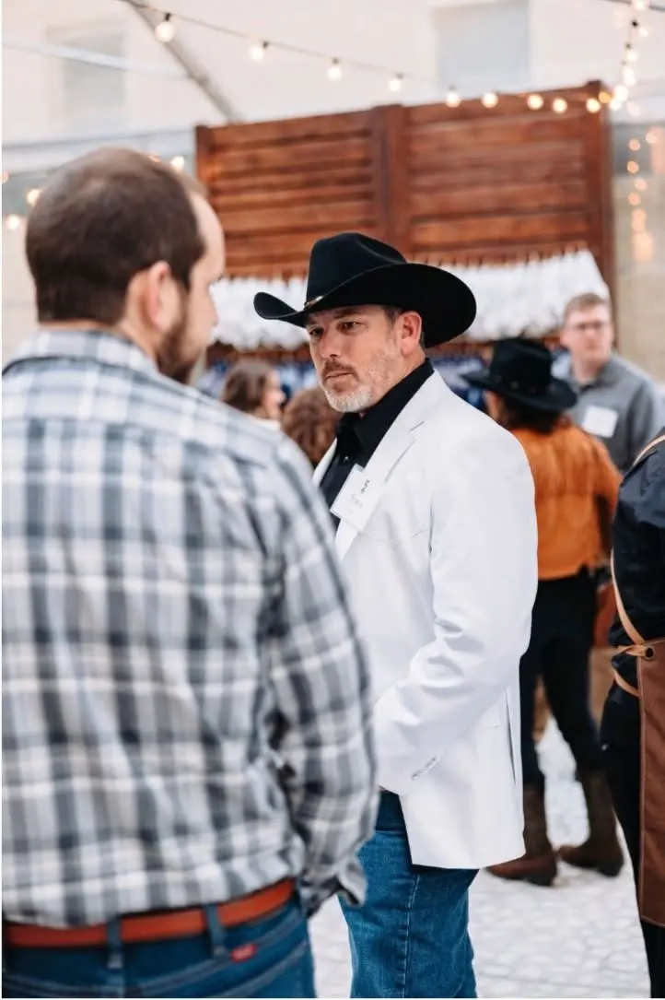

01
IT Operations
Stable infrastructure and repeatable processes, so the team spends less time firefighting.
Senior IT Operations Manager & Cybersecurity Lead
I lead the complete technology function for a 300-plus-person organization with employees and contractors across the United States and internationally. My work spans technology strategy, cybersecurity, infrastructure, cloud, SaaS administration, systems engineering, support operations, vendors, procurement, and digital platforms.
End-to-end technology and cybersecurity leadership for U.S. and international teams across remote, hybrid, studio, and production environments.
Removing complexity, tightening security, lowering costs, and giving leadership clear visibility into technology risk.
Director of IT, Head of IT, IT Operations Director, Cybersecurity Director, Security Operations Leader, Infrastructure Director, and Business Systems Director roles in Dallas-Fort Worth or remote.
Leadership Profile
I lead the end-to-end technology function for a 300-plus-person organization with employees and contractors across the United States and internationally. My role combines IT leadership, cybersecurity, infrastructure architecture, cloud and SaaS administration, systems engineering, help desk operations, vendor management, budgeting, procurement, and digital platforms.
I establish the technology roadmap and security program, manage budgets and vendors, design and secure infrastructure, oversee approximately 185 SaaS platforms, support the workforce, respond to security events, and step in directly when complex technical problems need to be solved.
The simplest way to describe it is that I operate as the company’s de facto Head of IT and Cybersecurity, with responsibility for work normally divided among an IT director, security lead, systems engineer, solutions architect, SaaS administrator, help desk manager, and web technology team.

Stable infrastructure and repeatable processes, so the team spends less time firefighting.
Security built around real risk and sized to the business, so it protects without getting in the way.
AWS, CDN, DNS, and full SaaS lifecycle management, designed to handle growth and traffic spikes.
Cleaner environments and clearer reporting, so leadership can see what is happening and where the risk sits.
Core Impact
From startup growth to studio operations, my work has focused on making technology more secure, more reliable, and more useful to leadership.
Rebuilt internal workflows with automation and AI-assisted tooling, increasing throughput while cutting manual work and support load.
Built security programs that map to recognized frameworks while keeping the business able to move. Decisions get made on actual risk rather than box-checking.
Found waste across SaaS, vendors, and infrastructure and removed it, saving $25,000+ without losing capability.
Architected systems that hold up under traffic spikes, production demands, and global access without downtime.
Experience
Senior IT Operations Manager & Cybersecurity Lead / Acting CISO
Lead the end-to-end technology function across IT operations, cybersecurity governance, infrastructure, cloud, SaaS lifecycle, identity, support, vendors, procurement, production technology, digital platforms, and executive reporting for a 300-plus-person international organization. This includes working directly with full-scale television production teams supporting The Chosen, building on 12 years of experience across the television and film industry.
IT Manager • Multimedia Specialist • Project Manager
Supported a high-growth environment that scaled from startup size to hundreds of employees, including infrastructure, access control, help desk leadership, network security, remote work enablement, and business systems support.
Founder, Owner, Builder
Founded and operated businesses spanning media production, drone cinematography, web development, operational consulting, and contracting. This founder experience shapes how I approach IT. Own the problem, simplify the process, and deliver outcomes.
Extended Capabilities
My work covers the systems, vendors, processes, and facilities technology that keep operations moving.
Full-stack network deployment and management across switching, wireless, routing, monitoring, segmentation, and site visibility.
Endpoint protection, network controls, access management, Brivo card access, and Eagle Eye camera systems across studio facilities.
Zoho CMS deployment across 25+ countries, including rollout planning, training, adoption support, and international team coordination.
SSO, IAM, lifecycle management, access reviews, vendor renewals, and SaaS governance across approximately 185 business platforms.
C-suite exercises for ransomware, deepfake attacks, breach response, business continuity, and social media takeover scenarios.
Hardware lifecycle, production support, building systems, cameras, card access, backups, and operational technology used on-site.
Technical Environment
Credentials
I start with the business outcome and work backward to the technology. I've built three companies from nothing, a media production studio, a concrete contracting business, and a consulting practice, while holding senior IT roles the whole time. That background shows up in how I work. I take ownership, move fast, and care more about whether something gets done than how it looks on a dashboard.
Let's Talk
If you are a hiring leader or recruiter looking for a Director of IT, Head of IT, or cybersecurity and operations leader who can stabilize an environment, tighten security, and scale it without slowing the business down, let's have a conversation.